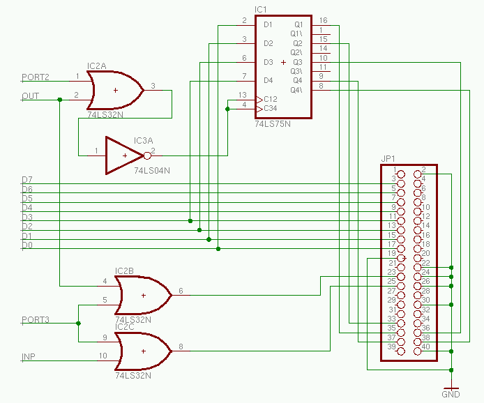

This circuit would be utilized by first writing the desired IDE port number to port 2, and then reading/writing the selected port from port 3.
See the Port Extender schematic to see how Port2, Port3, Inp, and Out are derived
When using this interface for CF cards I recommend you replace the LS components with HC components. Decoupling capacitors may also be needed.
Click here to see the software for driving this interface. 